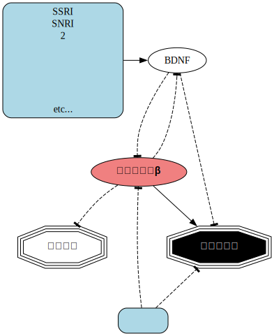

04 月 04 日 ( 金 )
思考整理のためのツールを考える Part 1
タイトルとは若干異なり、思考整理に流用できるシステム設計用ツールの使いかた、というお話になります。
この連載のきっかけは Heritage と名付けた自分の疾患の 30 年に渡る知見をまとめたサイトを作り、それを訪問看護の看護師さんに見せたことになります。
話の流れでツールを教えて欲しいとの看護師さんにお願いされたので、PlantUML と GraphViz ですよとツール名は伝えたのですが、それらを自分は思考整理のために使っていることもあるし、他の IT 技術者にも役立つことが予想もされたので、どのようにそれらのツールを使うのかということを整理するのも悪くないかと考えたわけです。
Heritage には PlantUML と GraphViz というソフトウェアで作成した svg フォーマットの図が描かれています。これらのソフトウェアはテキストエディタで作成したテキストファイルを svg、png、jpeg などの画像ファイルに変換します。
画像のレイアウトはほぼ全てをソフトウェアに任せるということになり、あまりユーザが自由自在にレイアウトできるわけではありません。というよりも自由にレイアウトするのはほぼ不可能です。
システム・エンジニアやプログラマーは、時間に追われる職能であり、なるべくならシステムの要件整理やシステムの最適化、システムの設計、システムの実装など頭脳労働に重点的に時間を割り振りたいと願うようになる職能です。
なので例外はあるものの仕事上では図の作成や修正などのオペレーション作業になるべく時間を取られたくない、凝りたくないと願うことが多い人種です。そのためソフトウェアに任せることができることは任せてしまえと考える人間が非常に多い職種でもあります。筆者も当然その一人です。
というのは嘘八百で IT エンジニアは通常道具大好き、ツール大好き人間です。テキストエディタの設定に平気で数日時間を潰すような人種です (もちろん例外もあります)。ですが仕事の時間は自制して……自制できてるかなぁ……自信があまりありません。でも思考の邪魔をするなっ！！とキレやすい人種というのは確かです……確かだと思います……まぁちょっと覚悟はしておけ？
話を戻します。
Photoshop などの画像編集ソフトは美しい図を作成することができます。ただ Photoshop などの画像編集ソフトの問題は IT エンジニアにとっては編集に時間がかかりすぎるということに尽きます。なにかの成果物を最も早く編集できるものは何かと問われたら、プログラマーなら十中八九それはテキストファイルだと答えるでしょう。
そのように考える先人はたくさんいたに違いありません。そのようなニーズを持つ先人たちが作り上げ、今もメンテナンスが続けられているのが先に述べた PlantUML や GraphViz などのツールになります。
これらのツールを使う前提として、ユーザが以下の手順で画像を得ることになるということを知っておかねばなりません。
- ユーザはソフトウェアが処理できる決められた書式のテキストファイルを作成する
- テキストファイルをそれらのツールで画像に変換する

変換作業があるので一見手間がかかりそうな気がするかもしれません。ですが実際には変換自体はプログラムが行うので、変換中の図を作っている本人の手間はまったくありません。
それだけではなくテキストファイルの編集の過程で、思考の整理に集中できます。これは大きなメリットです。それに伴ってさまざまなエピソードを思い出したり、新しい知見が発現することすらあるので、テーマに対する知見がますます広がったり深まるという効果もあります。
筆者はマインドマップや KJ 法、その他ブレインストーミングのための技法など、様々な非 IT 的なメソッドを仕事で活用してきました。それらの仕事の様々な場面で活用されている各種メソッドと、連載で取り上げているテキスト画像化法との共通点を非常に強く感じています。そのようなこともあり、テキストファイルを利用した思考整理は非エンジニアにも是非ともお勧めしたいところです。
更に述べるのならテキストファイルで思考を整理するのもかなり有効なのですが、そのテキストファイルを元にして自分の思考を図の形で可視化することは、自身の思考を俯瞰するのに非常に適しています。
それはまるで山を登ったり国内外を旅するときに地図を大きく目の前に広げて、自分の現在位置やこれまで歩んできた道、これから歩むべき道、その地形や困難さ、容易さなどを俯瞰するようなものです。
自分自身の思考でここはおかしんじゃないか？とか、これは間違ってるなとか、ここは過剰ではないか？とか、そもそも進むべき道を間違えてるとか、そのような自身の考えの間違いや、望ましくない考えや、望ましくない考えの強度にも気が付きやすくなります。
単純化して言うなら一連の作業は自分自身の思考の整理と見える化、そしてアップデートに非常に有効だということになります。
次回は具体的にどのようなツールがあって、それぞれどのようなときに向いているのかを、不完全なものになるかもしれませんが、整理していこうと思います。
- Category :
- #日記
- #blog
- #思考整理ツール
- #ライフハック
- #仕事からの応用
思考整理のためのツールを考える Part 2
日記であるにもかかわらず日が変わっていませんが書きはじめました。
ツールを選択する場合にそれぞれのツールのデモを見ることができると助かります。そして幸いにもそのような Web サイトがあります。Community list of comparisonsbetween Text to Diagram tools というサイトがそうです。
このサイトのデモでは以下のソフトウェアの実行結果を閲覧することができます。GraphViz、D2 は複数のレイアウトエンジンから 1 つを選ぶこともできます。
- PlantUML
本来は情報システム設計のための UML 図を作成するためのプログラムです。ただシステムの設計場面で UML 以外の図も必要になることから UML 以外の図もかなりサポートしています。なんなら数独の問題を作成することもできます。公式ページには休憩も必要だよねと書かれていてちょっぴりお茶目です。
レイアウトエンジンは GraphViz がデフォルトですが他のものも選ぶことができます。どのようなレイアウトエンジンを選ぶことができるのかは公式サイトの Layout Engines and Options というページにリストされていますので参照してください。
Heritage ではもともとはロジックツリーフォーマットの図を描きたかったのです。ですがテキストからロジックツリーを生成するプログラムが現存しないため、PlantUML の Work Breakdown Structure 図をロジックツリーの代用としました。人によってはマインドマップフォーマットを代用とすることもあるようです。

クリックまたはタップすると新しいタブで表示され拡大等しやすくなる。図のソースファイルはここ。 また note という注釈用の箱を描くことが簡単にできることや、各ボックスの関係を描くのが容易、ボックスの中に簡単にボックスを入れ子にできることもあり、うつ病の発生機序を示す図でも使用しました。

クリックまたはタップすると新しいタブで表示され拡大等しやすくなる。図のソースファイルはここ。 - GraphViz
薬やタンパク質などの各種因子、ホルモンなどの持つ抑制を表現するためのコネクションの Tee ヘッドを唯一表現できるため Heritage では薬や非薬物療法がどのように作用するのかを示した図を描くのに利用しています。
 クリックまたはタップすると新しいタブで表示され拡大等しやすくなる。図のソースファイルはここ。 使用可能なレイアウトエンジンは公式サイトの Layout Engines のページにリストされているので参照してください。
生成される図はカラフルで美しいのですが、汎用的な図を描くの適しているかと言うと PlantUML や D2 とあまりかわらないように感じます。また最新の PlantUML でも同等の美麗さで図が作成されるようになっています。そのような事情もあり個人的にはあまり必要性を感じられず、ほとんど使っていません。やはり綺麗ではあるのですがだ。
ただマインドマップは本当にマインドマップらしい画像を出力します。もちろんオリジナルのトニー・ブザン氏のマインドマップにはかないませんが。
またいわゆる普通のグラフ、円グラフ、レーダーチャートなど他のソフトウェアでは描けない図を描くことができますので、何が描けるのかを公式サイトのドキュメントでチェックしておくとよいと思います。
いろんな図がカラフルに描かれるので、使ってみたいと惹かれるソフトウェアであることは間違いありませんし、Web との親和性も高いので人気があります。
コネクションの矢印ヘッドの種類がもっと増えるかカスタマイズできるようになれば、他を押しのけて個人的利用時の第 1 選択肢になると思います。時間をつくってもう少し評価を深めたいところです。
もしかすると汎用的な図を描く目的があって、このソフトが目的を満たすのであれば PlantUML 以上によい選択肢かもしれません。
ソースの構造が html や css、オブジェクト指向言語の影響を受けており可読性が非常に高い (ただしそのためにパンチ量が増える場合もある) という特徴があります。プログラマーだと一番好きになりそうな変換プログラムかもしれません。筆者はこのテキストファイルの記法が一番気に入っています。
先に紹介したCommunity list of comparisonsbetween Text to Diagram tools でデモを見ることができるのですが、このサイトではほぼ全てを TypeScript という Web ブラウザで動作するプログラミング言語で実装していることもあり、パフォーマンスや Web ブラウザへの負荷が高いという問題もあります。とはいえ簡便に各プログラムの差異を確認する程度の利用であれば大きな問題は発生しないかもしれません。
それぞれのプログラムに特徴や得手不得手がありますので、デモを見た上でこれらのツールを都度適切にチョイスすればよいかと思います。筆者がつくった図ももちろん参照していただければ幸いです。
次回から実際のそれぞれのプログラムの使い方について説明していきたいと思います。最初に筆者が最も使っている PlantUML を取り上げたいと思います。
- Category :
- #日記
- #blog
- #思考整理ツール
- #ライフハック
- #仕事からの応用
- #PlantUML
- #GraphViz
- #MermaidJS
- #D2